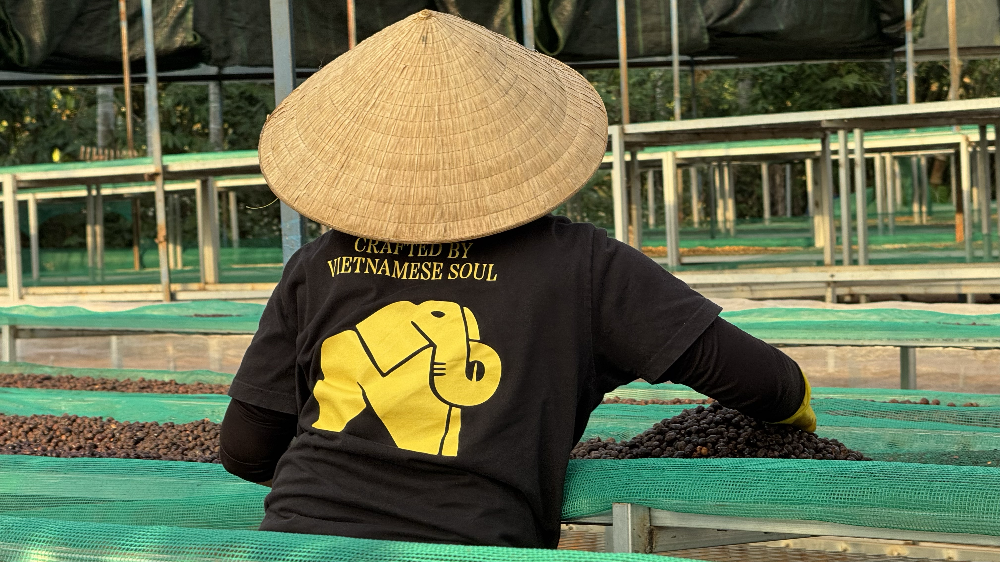
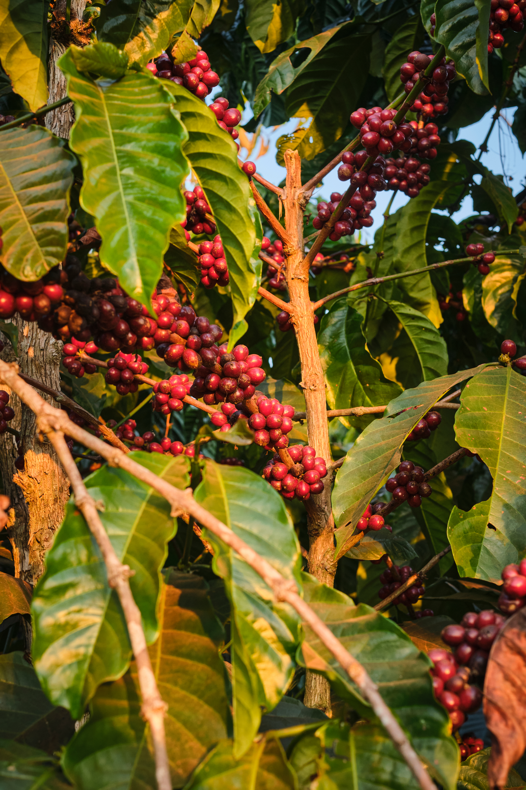

{{ t.heroEyebrow }}
{{ t.heroTitle }}
{{ t.heroBody }}

{{ t.manifestoEyebrow }}
{{ t.quote1 }} {{ t.quote2 }}
{{ t.manifestoBody }}
{{ t.phEyebrow }}
{{ t.phTitle }}

{{ t.phLead }}
-
{{ r.n }}
{{ r.title }}
{{ r.body }}
{{ t.teamEyebrow }}
{{ t.teamTitle }}
{{ t.teamBody }}

- {{ c.n }}{{ c.issuer }} {{ c.label }} {{ c.desc }}
{{ t.prodTitle }}
{{ t.prodBody }}
- {{ ps.num }}{{ ps.unit }} {{ ps.label }}
{{ t.frEyebrow }}
{{ t.frTitle }}
{{ t.frLead }}
{{ t.frBody }}
{{ t.ingLabel }}
- {{ i.label }}

{{ t.chEyebrow }}
{{ t.chTitle }}
{{ t.chBody }}
{{ t.tlEyebrow }}
{{ t.tlTitle }}
{{ t.tlBody }}
-
{{ m.years }}
{{ m.title }}
{{ m.body }}
-
{{ m.years }}
{{ m.title }}
{{ m.body }}